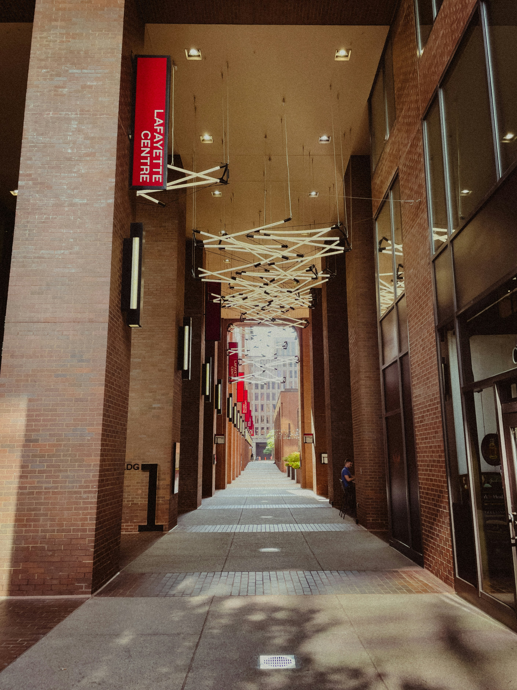

Hoş geldiniz! GeziOM, seyahat tutkunlarının vazgeçilmez rehberi ve keşif partneri olarak karşınızda. Size dünyanın dört bir yanındaki en gizli köşeleri, keşfedilmemiş güzellikleri ve unutulmaz deneyimleri sunuyoruz. Şehirlerin kalbinde, doğal güzelliklerin derinliklerinde ve kültürel hazinelerin arasında yapacağınız yolculuklarda GeziOM, size ilham verecek, yol gösterecek ve seyahatlerinizi daha anlamlı kılacak. Planlamadan keşfe, önerilerden pratik ipuçlarına kadar her şey burada, sizin için hazır. GeziOM ile her adımda yeni bir macera başlatın ve gezmenin keyfini çıkarın!
Çeşme’nin merkezinde yer alan Çeşme Kalesi, Osmanlı dönemine ait tarihi bir yapıdır. 1508 yılında inşa edilen kale, şehri savunmak amacıyla yapılmıştır. Kale içinde gezebilir, tarihi surları keşfedebilir ve kale terasından Çeşme’nin güzel manzarasını izleyebilirsiniz. Kale aynı zamanda, çeşitli etkinlikler ve sergilere ev sahipliği yapmaktadır.
Çeşme Marina, lüks yatların ve teknelerin demirlediği modern bir marinadır. Marina çevresinde bulunan kafe ve restoranlar, deniz ürünleri ve Ege mutfağından lezzetler sunar. Ayrıca, marinada yürüyüş yaparak veya bir kafede oturarak deniz manzarasının tadını çıkarabilirsiniz.
Çeşme, Ege mutfağının en güzel örneklerini sunar. Taze deniz ürünleri, zeytinyağlılar ve meze çeşitleri, tatilinize lezzet katacaktır. Çeşme merkezindeki restoranlarda ve Alaçatı’daki kafelerde, zeytin yağlı enginar, deniz tarakları, balık ve deniz ürünleri yemeklerini deneyebilirsiniz. Ayrıca, bölgeye özgü tatlılardan olan şambali ve Cezerye gibi yöresel lezzetleri de tatmanız önerilir.
Çeşme’nin rüzgarlı atmosferi, rüzgar sörfü ve kiteboard gibi su sporları için mükemmel koşullar sunar. Alaçatı ve Çeşme açıklarında bulunan rüzgar sörfü okulları, hem yeni başlayanlar hem de deneyimli sporcular için çeşitli kurslar ve ekipman kiralama hizmetleri sunar. Su sporlarına ilgi duyuyorsanız, Çeşme’de bu aktiviteleri rahatlıkla yapabilirsiniz.
Çeşme, doğal güzellikleri, tarihi zenginlikleri ve canlı atmosferi ile tatilciler için ideal bir destinasyondur. Plajları, Alaçatı’nın şirin sokakları, tarihi kalıntılar ve termal kaplıcalar, Çeşme’de geçireceğiniz zamanı unutulmaz kılar. Ege’nin sıcak atmosferinde hem dinlenmek hem de keyifli vakit geçirmek için Çeşme, mükemmel bir seçenektir.